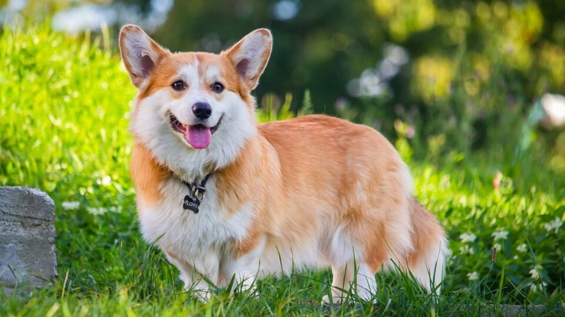

Рост - до 30 см
Вес - от 15 до 25 кг
Продолжительность жизни - от 12 до 15 лет

Вельш-корги, или просто корги-собака для детей, кинологического спорта и активной жизни в городе и на природе.
Корги – собачки невысокого роста. Их тело довольно-таки длинное, а уши – большие. Эта порода особенно стала популярна в связи с тем, что ее обожает королева Великобритании Елизавета II.